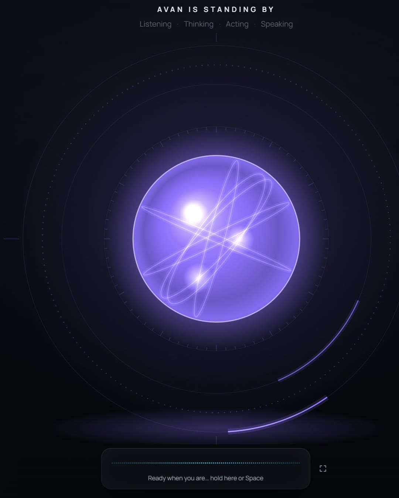

This is how I built Avan, my own AI assistant that runs at home. I'm not a full-time developer: I described what I wanted and an AI coding agent wrote the code, one small change at a time. This guide gives you what you need, what it really costs, how the pieces fit, and the exact steps, so you can build yours.
All of this runs on a small computer at home, and I reach it by voice, Telegram or a web page.
Any old PC or mini PC that can stay on works. Mine is a second-hand office PC: Windows runs a small Linux virtual machine (Ubuntu, 8 GB of memory) for Avan, and Home Assistant in another one beside it. You don't need a graphics card: the AI runs in the cloud.
An AI model with an API (I use Anthropic's Claude) is the brain. Telegram (free) is the chat app and where it asks for approvals. For voice: Deepgram to hear you and Cartesia to speak. Home Assistant if you want it to control your home (free to run yourself).
This is what makes it possible without being a developer. You describe a feature in plain words, it writes the code and the tests, you check and approve. I build Avan in small steps this way: one feature, one change, tested, then the next.
Skill you do need: being clear about what you want, and patience to test each step.
Real numbers from my setup, so you can plan. You can start much smaller.
| Item | Cost |
|---|---|
| AI model (the brain)Pay per use. Day-to-day chat and checks are cheap; heavy tool use costs more. | A few $ a month and up |
| Voice: speaking (Cartesia)Starter plan, plenty for daily use | $5 / month |
| Voice: hearing (Deepgram)Pay as you go; new accounts get free credit | Free credit, then pennies |
| TelegramChat and approvals | Free |
| Home AssistantFree to run yourself; their cloud for remote access is optional | Free (cloud optional) |
| A domain nameOptional, only to reach it from outside home | About $10 / year |
| The computerOne you already have, or a used mini PC | £0 – £150 once |
My tip: set a monthly spending limit on every account on day one, and have your assistant tell you what it's costing you.
That loop is the whole trick. Every new skill is just one more tool: a name, a description the model reads, and a small function that does the work.
Each step works on its own before you start the next. Don't build everything at once.
On your always-on computer, create an Ubuntu virtual machine (or use a spare PC or mini PC directly). Give it 4–8 GB of memory. Install Python with uv, and put your keys in a .env file that never goes into git.
This is the core loop in about 20 lines of Python. Get this working first: ask it the time and watch it call the tool.
import datetime, anthropic
client = anthropic.Anthropic() # reads ANTHROPIC_API_KEY
tools = [{"name": "get_time",
"description": "The current local date and time.",
"input_schema": {"type": "object", "properties": {}}}]
def run_tool(name, args):
if name == "get_time":
return datetime.datetime.now().strftime("%A %d %B, %H:%M")
messages = []
while True:
messages.append({"role": "user", "content": input("you> ")})
while True:
r = client.messages.create(
model="claude-sonnet-5", max_tokens=1024,
system="You are Avan, a calm, helpful home assistant.",
tools=tools, messages=messages)
messages.append({"role": "assistant", "content": r.content})
if r.stop_reason != "tool_use":
print("avan>", "".join(b.text for b in r.content if b.type == "text"))
break
messages.append({"role": "user", "content": [
{"type": "tool_result", "tool_use_id": b.id,
"content": run_tool(b.name, b.input)}
for b in r.content if b.type == "tool_use"]})light.turn_on, scene.turn_on), using a long-lived access token.Make each tool declare its effect: read (safe), minor (a light), or consequential (a lock, money, a message to someone). Step 6 uses this.
Create a bot with Telegram's @BotFather, and have the core answer messages only from your own chat ID. Now you have your assistant everywhere, and a place for it to ask you things.
A small SQLite table with three kinds of memory: facts ("car service on the 10th"), preferences ("temperatures in Celsius") and threads (things to follow up). After each reply, a quick second call decides if anything is worth saving. Only bring the few relevant memories into each conversation, and never store passwords or card numbers.
When the model asks for a consequential tool, the core doesn't run it. It sends you a Telegram message with Approve and Decline buttons and waits. Enforce this in code, not in the prompt: the model can be talked into things, your code can't.
A tiny client on your laptop records while you hold a key and sends the audio to the core. The core turns speech into text (Deepgram, which handles mixed English and Hindi), runs the same loop, and speaks the reply sentence by sentence (Cartesia), so it starts talking in well under a second. Keep a free local voice as a backup.
Name trouble? If the voice says your assistant's name wrong, spell it the way it sounds in what you send to the voice. Mine says "Avan" right when I write "Evan".
Run checks on a schedule: a morning brief at 07:45 that only speaks if today is unusual, and a home check every 30 minutes (doors, leaks, the internet). Add quiet hours, never report the same thing twice in 12 hours, and cap notices per day. Checks can look, never change anything.
A small web app on the same machine: chat, settings, memory and a live status page. Keep it on your home network, or put it behind a login and device certificates if you open it to the internet. This is where the glowing orb in my reel lives.
1. Keys stay secret. In a .env file on the machine, never in code, chats or screenshots.
2. Read before write. Every new connection starts read-only.
3. Approvals in code. Locks, the alarm, money and messages to other people always wait for your yes.
4. Spending limits on every paid account.
5. Small steps, with tests. One feature per change, and a list of everything it can do, kept up to date.
Paste this into an AI coding agent in an empty folder on your Linux machine. Then build one step at a time.
I want to build my own personal AI assistant called [NAME] that runs on this
Ubuntu machine. Build it in small steps, each one working and tested before
the next. Use Python with uv, keep all keys in a .env file (never in git), and
keep a plain-English HANDBOOK.md of everything it can do.
Step 1 now: a terminal chat that uses an AI model's API with tool use. Add one
tool, get_time. Each tool must declare its effect: read, minor or
consequential. Consequential tools must never run without my approval (we'll
add Telegram approvals in a later step; for now, ask in the terminal).
Ask me questions before you start if anything is unclear. Show me how to run it
and how to test it.Want the TV home screen too? The master prompt in part 3 asks you everything and builds it, with or without an assistant.
Follow @dilgrover for the next parts. Questions? Comment on the reel.
Built and tested in my own home. Your setup will differ: test each step, and keep your keys safe.